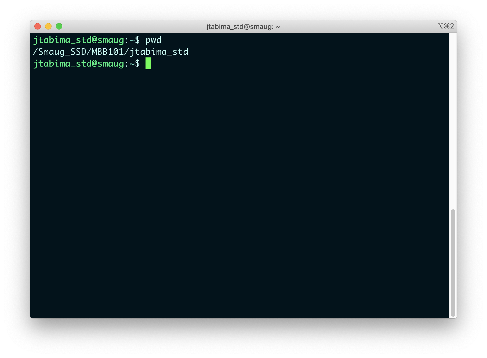
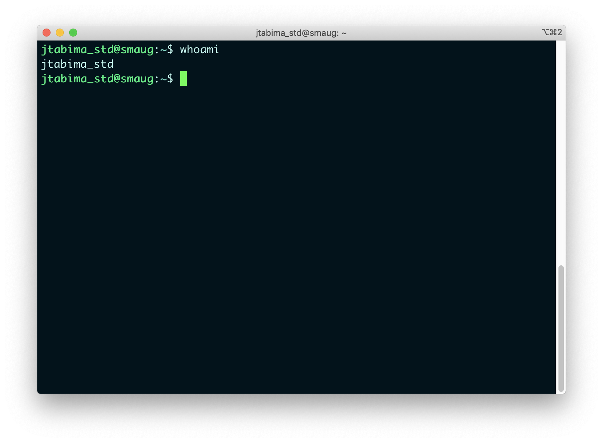
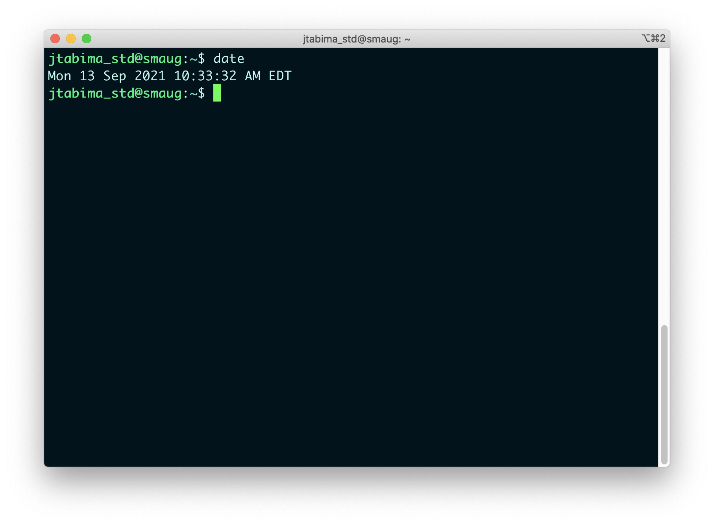
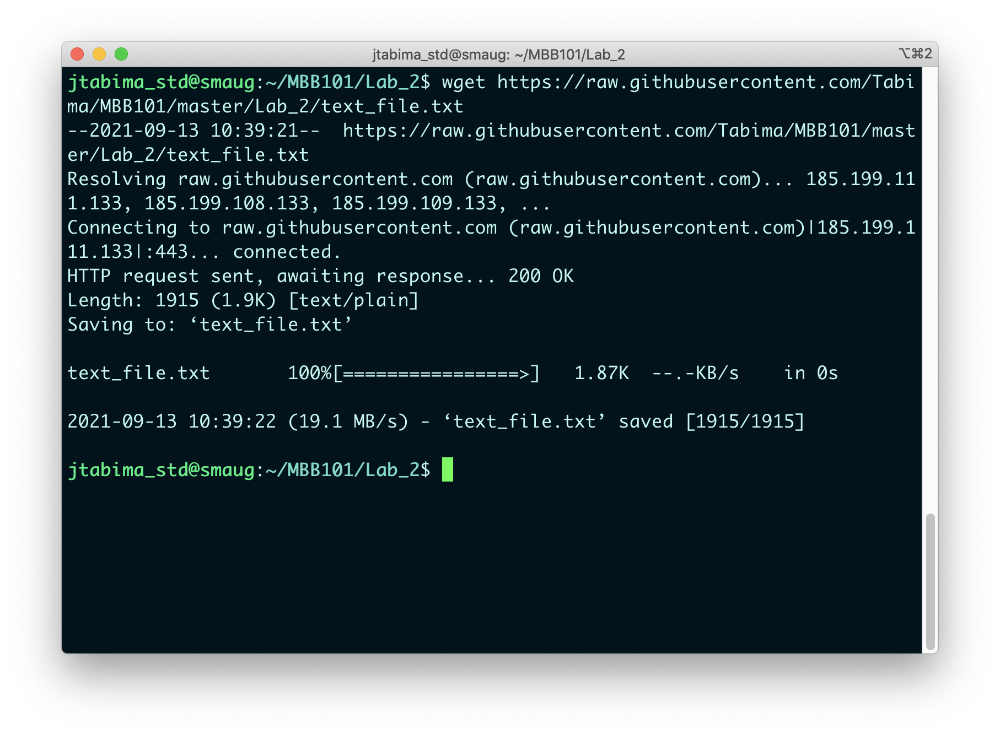
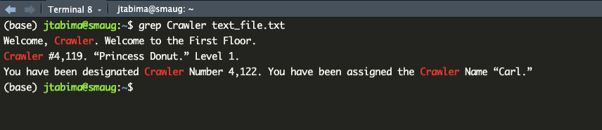
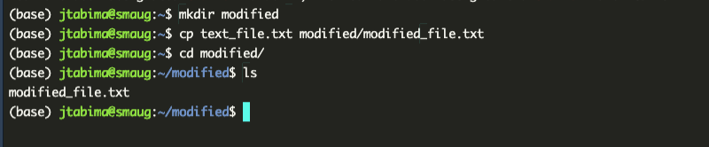

Chapter 6 Introduction to the Command Line
Objectives:
- To start using the command line for basic coding
- To learn how to navigate in the command line
- To create our first lines of code to process text files
The UNIX command line is a program that will interpret commands, in the form of text instructions, for the computer to be executed.
This means that you can tell the computer to list files or print text in the screen or do a mathematical operation using a set of commands and the computer will execute them and provide you with an answer.
However, before we start using the command line I decided to make a list of the most commonly used commands in UNIX for your future reference.
6.1 Commonly used commands
6.2 Section 1: Basics of the command line
Today, we will do very basic things on the cluster. First, we will learn about our whereabouts (where is our home folder), then we will learn how to create a folder for the lab within your home folder. Then, we will create a folder for lab 2 and download a file to it. Finally, we will do a similar exercise to the one in class, and count the number of occurrences in a text file.
6.2.1 Logging into the cluster.
- Log into your RStudio session through your browser as indicated above
- Go to the
Terminaltab in the Command Pane Viewer in the bottom of your screen
WELCOME TO SMAUG!!
6.2.2 Where are we? Who am I?
First thing: you land in the magical realm of the cluster. Now… where are you?
Question 1
- What command would you use to check which working directory you are in?

In addition, in case you forget what is your username, you can always use the command whoami:

This means two things:
- Our home directory, where all of your files are, is located within the
/Smaug_SSD/BIOL123_2026/usernamefolder - Our username, in case we forget it, can always be remembered.
6.2.3 Running basic commands
So, the idea of the command line is to run commands, right? Well, congrats! You have already ran two commands!
Question 2
- Which commands have you already ran?
So, as you know now. To run commands you just write them and that’s it!
For example: you want to know what time it is? Use the command date:

We will learn to use more commands as we use the cluster more and more.
6.2.5 Downloading files into the cluster.
After creating your Lab_2 folder, we need to populate it with files.
I have created a file for us to do a quick and fun exercise today and have uploaded it to a public repository of files called GitHub, at this link: https://raw.githubusercontent.com/Tabima/BIOL123/master/Lab_2/text_file.txt.
To download the files, use the wget command. (wget is short for web page get):

Question 5
- What are the contents of this file? What command from the list above would you use to open or view a file?
Question 6
- How many lines does this file have? What command from the list above would you use to count the number of lines? What are the three outputs from the command?
6.2.6 Extracting patterns from a text file
Finally, let’s do the examples from Monday’s course:
- How many times is the word “Crawler” found in the document?
- How many times is the cat mentioned?
- How much time was left in the count-down timer ?
To find and match a pattern, we can use the command grep. (grep is short for g/re/p: globally search for a regular expression and print matching lines)
So, if we want to find out if the word “Crawler” is mentioned in the document we use the command:
grep Crawler text_file.txt
NOTE: Before you run the command, do you see anything weird?
In this case, we are using two more arguments after the
grep command: The pattern of interest we want (Crawler) and
the file that we want to search in (text_file.txt).
To learn how to use these commands, we can google the command or use
the man command (short for manual).
Alright, what does the output of grep look like?

Ah cool, we can see if the pattern is present or not!
Question 7
-
What happens if you try to answer these questions using
grep? -
How many times is the word “Crawler” found in the document?
-
How many times is the cat mentioned?
-
How much time was left in the count-down timer?
Summarize how grep can help you with finding these
patterns of interest.
Question 8
-
Using the
man grepcommand, how can you use grep to count the number of occurrences of a text string? For example, can grep count the number of times the wordCrawlerexists in the file? Write the command you would use and the results.
6.3 Section 2: Advanced command line.
6.3.1 Identifying paths
We know now how to download and check files, but we also need to remember how to look at where the files are in case we need to use paths in the future.
For example, what is the path of the text_file.txt we were working on?
Question 9
-
Using the
readlink -fcommand, can you indicate what the full path of this file is?
Question 10
-
If you are in your home (
~) folder, and you have a file there calledfile.txt, what is the relative path of this file?
6.3.2 Creating copies of a file into a new folder.
We want to modify the text_file.txt to add, remove, replace or count elements in a new version of it.
So, the idea is to create a new folder inside your Lab_2/ folder, named modified/.
Create the folder and copy the text_file.txt file into a new file called modified_file.txt in a new folder called modified/ using the cp command.
Question 11
- Please present syntax of the command to do the instructions above.
Question 12
-
What is the absolute path of the
modified_file.txt?
Let’s check if it worked:

6.3.3 Replacing patterns using sed
So, if you recall the theory class, we learned about the sed command to replace patterns.
The idea is that you will replace some patterns in the modified_file.txt file and then check if the results make sense.
- Change the
Donutpatterns toJavierand save the file asnew_cat.txtusing thesed s/Donut/Javier/g modified_file.txt > new_cat.txtcommand.
Question 13
-
What does the
>in the command mean?
Question 14
-
Check the number of occurrences of the word
Donutin thenew_cat.txtfile usinggrep.
Question 15
-
How many times does the word
Donutappear? Is it the same number as in question 7 when you checked the number of times that Harry was mentioned? Why?
Question 16
Count the number of lines of the new_cat.txt file and
compare them to the original file.
-
Is the number of lines similar between
new_cat.txtandmodified_file.txt? Very briefly justify your answer.
- Extract all the lines that say
Javierfromnew_cat.txtinto a new file calledJavier_lines.txt.
Question 17
- Present the syntax to execute the previous instruction.
Question 18
-
What are the number of lines that say
Javierin the file? Is the number different from questions 14 and 15? Explain your answer very briefly.
6.3.4 Removing files, renaming files and creating symbolic links
Now that we are done creating files and modifying them, we need to remove all the files we are not using anymore. The rm command will allow us to do that.
- Remove the
potter_lines.txtand themodified_file.txtfiles from the folder.
Question 19
- What are the commands you used to remove the files? How can you make sure the files do not exist anymore?
- Rename the
new_cat.txtfile asjavier_cat.txtusing themvcommand, as such:mv new_cat.txt javier_cat.txt.
Question 20
- Explain the syntax of the previous command briefly.
- Go back to your
Lab_2/folder (remember to use thecd ..command) and create a symbolic link of yourPotter_story.txtfile into theLab_2/folder using theln -s modified/javier_cat.txt ..
Question 21
- Explain the syntax of the previous command briefly.
Question 22
-
Use the ls -l command while in your
Lab_2/folder. What is a weird pattern you see on the newjavier_cat.txtfile? Is that its absolute or its relative path?